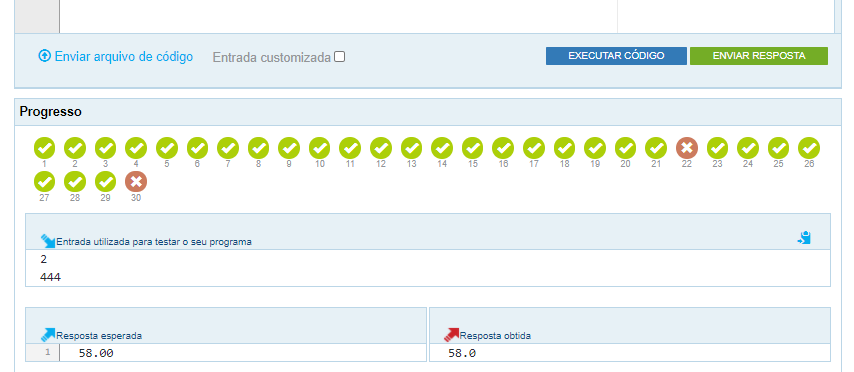

Atividade 2 - The Huxley
atividade valendo nota
Material de apoio para a disciplina Linguagem de Programação da UACSA/UFRPE
Produzido pelo prof. João Pimentel
No decorrer do curso usaremos a ferramenta The Huxley para a entrega das atividades. Portanto, é necessário que você faça o cadastro na ferramenta com o seu nome completo seguindo as instruções a seguir.
O cadastro na ferramenta precisa ser feito com o seu nome completo, senão você ficará sem nota.
Veja o tutorial de como se cadastrar na ferramenta e encontrar as atividades üëá

tutorial
O código (chave) da sua turma está disponível na Turma Virtual da disciplina (SIGAA).
Alguns alunos tentam encontrar a turma no The Huxley pela barra de busca, mas na verdade é preciso clicar no ícone de chaveiro, conforme explicado no tutorial.
Alguns alunos esquecem de escolher a opção Python 3 na hora de escrever o código. Para que a ferramenta execute o seu programa corretamente é preciso escolher Python 3, conforme explicado no tutorial.
Agora que você já se cadastrou na ferramenta e encontrou a sua turma, vamos ver o que será feito na atividade em si!
Esta atividade 2 tem cinco problemas que exercitam o cáculo de expressões matemáticas simples a partir de entradas (inputs) dos usuários - ou seja, com base em valores desconhecidos.
Recomendo olhar o enunciado do problema no The Huxley e responder primeiramente no repl.it, já que no repl.it é mais fácil de testar o nosso programa. Em seguida, é só copiar para o The Huxley e enviar a resposta.
Mas também pode ficar tranquilo(a), não tem problema se você enviar respostas incorretas no The Huxley antes de acertar - só será contabilizado o último programa que você enviou.
Lembre-se de escolher a opção Python 3 quando for escrever a resposta no The Huxley.

Mas no Huxley a resposta será sem o texto...
... a não ser que o enunciado do problema peça para incluir algum texto.
Assim que você envia a resposta aparece o resultado de cada caso de teste do problema, na parte de baixo da tela. Os círculos vermelhos com X representam os erros, como na imagem abaixo.
{kind=link}
No exemplo desta imagem, o código que a pessoa fez deu certo em 28 dos 30 testes realizados. Apenas 2 testes, que estão vermelhos, deram errado. Ou seja, se a questão valesse 10 pontos, a pessoa ficaria com 9.3.
A seguir, veja dicas para cada problema desta atividade üëâ
O enunciado não deixa claro, mas essa questão só trabalha com números inteiros. Então, em vez de float(input()), é melhor usar int(input()).
A dica para esta questão é seguir exatamente a mesma ordem que está no enunciado. Se printar a subtração antes da soma, por exemplo, o resultado não estará correto.
Ah, outra dica é lembrar de não inserir textos no print nem no input.
Não é preciso fazer contas neste problema, basta printar a mensagem com o número que for fornecido na entrada.
OBS: a entrada pode ser qualquer número, e não apenas 3157. Esse número é apenas um exemplo. Portanto, o código abaixo não atende ao enunciado:
A fórmula do IMC é a massa dividida pelo quadrado da altura.
"Professor, eu fiz certo, mas a ferramenta tá dizendo que está errado!". Provavelmente você não está fazendo o arredondamento da forma que precisa ser feito.
Passe pro pr√≥ximo slide para ver como fazer o arrendondamento corretamente üëâ
Alguns problemas, como o "Cálculo do IMC", podem pedir que você mostre o resultado só com duas casas decimais. Você certamente já aprendeu a fazer isso com os vídeos do Guanabara, mas aqui vai um exemplo para facilitar a sua vida:
Observe que já estou lhe dando a faca e o queijo, agora só falta o pão!
Meu objetivo √© dar as condi√ß√µes para que voc√™ aprenda. Se voc√™ optar pelo "atalho" de copiar as respostas, s√≥ quem perde √© voc√™ mesmo(a). Em vez de copiar, tire suas dúvidas no nosso grupo de WhatsApp - al√©m de seus colegas, o monitor e eu estamos lá para ajudar üí™